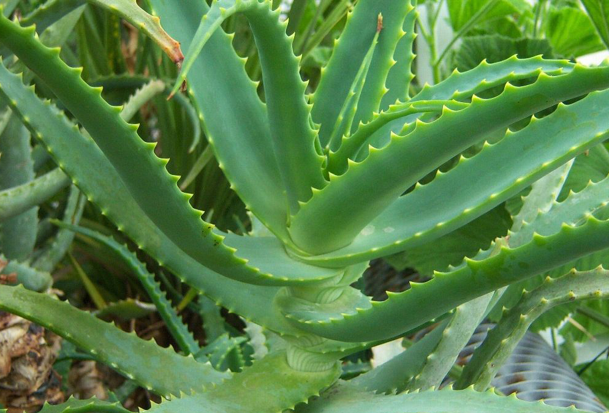

Aлоэ вера

Алоэ вера часто вырастает до четырех метров в высоту. Имеет ветвистые, густо облиственные, прямостоячие стебли. Листья алоэ очередные, длиной до 40 сантиметров, по краям имеют жесткие хрящевидные зубцы. Отличаются наличием очень мясистой и сочной мякоти. Цветки крупные, оранжевые, шестичленные, с тонкими цветоножками, образуют многоцветковую кисть цилиндрической формы длиной около 40 сантиметров. Плодом алоэ является коробочка с большим количеством семян.
Произрастая в комнатных условиях, алоэ обычно цветет с февраля по март. Появившиеся плоды не вызревают.
Родиной алоэ вера считаются острова Кюрасао и Барбадос, юго-западная часть Аравийского полуострова. Растение культивируется в странах Азии и Африки, на Антильских островах. Во многих странах мира его выращивают в качестве декоративного садового и домашнего растения.
Сбор и заготовка алоэ.
Свежие листья алоэ широко используются как в народной, так и в традиционной медицине. Их обычно собирают по мере отрастания. Из сока, находящегося в листьях растения, получают методом упаривания сгущенный сок алоэ, который в медицине называется сабуром. Высококачественный сабур полностью растворяется в 70-процентном спирте, хуже – в воде, бензине и эфире, совсем не растворяется в хлороформе. Фармацевтическая промышленность изготавливает из жидкого сока алоэ ряд препаратов, а также выпускает свежий сок с добавлением небольшого количества спирта.
Свежий сок алоэ можно получать в домашних условиях. Для этого из наиболее мясистых нижних листьев выжимается сок, который незамедлительно используется по назначению. Также известен способ заготовки алоэ в виде сиропа, который варится из сока растения с добавлением сахара и раствора хлорида закисного железа.
Полезные свойства алоэ вера
При лечении больных и приготовлении медицинских препаратов используют сок алоэ, свежие листья, экстракт и сабур (сгущенный сок). Для этого с растения, достигшего трехлетнего возраста, в октябре-ноябре собирают средние и нижние листья длиной более 18 см. В листьях содержатся эфирные масла, ферменты, антрагликозиды, витамины, аминокислоты, минералы, полисахариды, фитонциды, а также салициловая кислота.
Оно эффективно при облучении, воспалительных заболеваниях, свежих ранах, ускоряя процесс регенерации. Алоэ действует как иммуномодулятор, способствуя общему оздоровлению организма. Активные вещества сабура усиливают перистальтику кишечника.
Сабур, полученный из листьев алоэ, обладает хорошим эффектом при лечении хронических запоров. Свежий жидкий сок растения также является несильным слабительным средством. Препараты, изготовленные из отжатого под прессом сока, рекомендуются для лечения гастритов, отличающихся понижением кислотности желудочного сока, и колитов хронического типа.